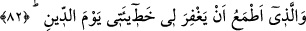

diriltir. Hakîkat şudur ki beni benliğimden öldürür ve hidâyeti ile diriltir. Hakîkî hayat
da bundan ibarettir.”
Fânî hayatın peşinde olmam, sensin benim aziz ömrüm
Keder dolu can istemem, can kurban sana, benim canım
Senâî şöyle demiştir:
Mutluluğu sen olan neden gam çeksin?
Seninle diri olan, neden ölsün?
Bu dünyada varlık sebebi Sen iken,
O cihanın (âhiretin) veresiyesine insan nasıl gönül bağlar?
82. Ve hesap günü hatalarımı bağışlayacağını umduğum O’dur.
“Ve hesap günü” yâni yapılanların karşılığının verilip hesabının sorulduğu gün
“hatalarımı bağışlayacağını umduğum” ümit edip beklediğim “O’dur.”
İbrâhim (a.s.) burada teeddüben umma lafzı ile duâ etmiş, önceki âyetlerde zikredilen
hususlarda olduğu gibi bu isteğinde kesin bir ifâde kullanmamıştır. Yine böyle ifâde
etmesi kulun kendisinin emanda olduğuna hükmetme yetkisine sahip olmadığının, onun
havf ve reca arasında olması gerektiğinin bilinmesi içindir. Yine bu ifâde, Allah’ın
keremine delâlet etmesi içindir. Çünkü Kerim olana ümit bağlandığı zaman, O bunu
yerine getirir.
İbrâhim (a.s.) ismet sâhibi olduğu halde hatâyı kendisine nisbet etmiştir. Çünkü hataya
çoğu kez ârızî olarak düşülür. Bu durum nefsini kırmak, ümmetine günahlardan
sakınmalarını, yaptıkları kusur ve günahların affını dileme konusunda dikkatli ve
talebkâr olmalarını öğretmek ve kendisinden sâdır olması mümkün olan küçük zelleleri
telâfî etmek içindir. Bununla birlikte ebrârın (iyi kimselerin) sevap saydıkları bâzı
şeyler mukarrabîne (Hakk’a yakın kılınan kimselere) göre günahlardan kabul edilir.
Nitekim ebrârın dereceleri, mukarrabînin derekeleridir.
Telhîs’te şöyle der: “Burada kasdedilen, Hz. Muhammed (a.s.)’ın ümmetinin
hatâlarıdır. Hz. İbrahim, Melik ve Celîl olan Allah Teâlâ’dan onların bağışlanması için
duâda bulunmuştur.”
Hatâ ve günahlar dünyada mağfiret olunduğu halde İbrâhim (a.s.)’ın onu ahiret gününe
bağlaması, fayda ve tesirinin o gün ortaya çıkmasından dolayıdır. Bu ifâdede kıyâmet
günüyle korkutma ve bağışlama olmazsa o günde cezâ olacağına işâret etme de söz
konusudur. Bu ifâdenin benzeri yine İbrâhim (a.s.)’ın şu duâsıdır: “Rabbimiz! Hesabın